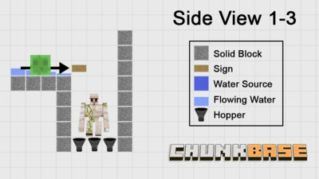

Automatic Slime Farm
Last Update:
This three-part slime farming series shows you how to build fully automatic slime farms in slime chunks and swamp biomes. The first video gives an overview of the farm types and demonstrates the differences between slime spawning in slime chunks and slime spawning in swamps. The other two videos show how to actually build them; one of them deals with slime chunks and the other one with swamp biomes.
Introduction Video
Slime Farm in Slime Chunks
Slime (Hostile) Farm in Swamps
Finding Slime Chunks (Tools)
World Downloads
- Slime Chunk Farm with Drowning Trap: Download
- Slime Chunk Farm with Lava Trap: Download
- Slime Chunk Farm with Iron Golem Trap: Download
- Plain Swamp Farm with Lava Trap: Download
- Hostile Swamp Farm with Drowning Trap: Download
- Hostile Swamp Farm with Iron Golem Trap: Download
Trap Blueprints
Drowning Trap
Only slimes (for slime chunk farms):
{kind=link}
{kind=link}
{kind=link}
Slimes and other hostile mobs (for swamp farms):
{kind=link}
{kind=link}
{kind=link}
Lava Trap
Only slimes (for slime chunk farms):
{kind=link}
{kind=link}
{kind=link}
Slimes and other hostile mobs (for swamp farms):
{kind=link}
{kind=link}
{kind=link}
Iron Golem Trap
Only slimes (for slime chunk farms):
{kind=link}
Slimes and other hostile mobs (for swamp farms):
{kind=link}
{kind=link}
{kind=link}
Credits
Thanks to Red3yz and xisumavoid for their lava trap designs.
Also thanks to Ethos for his canal-style mob system.